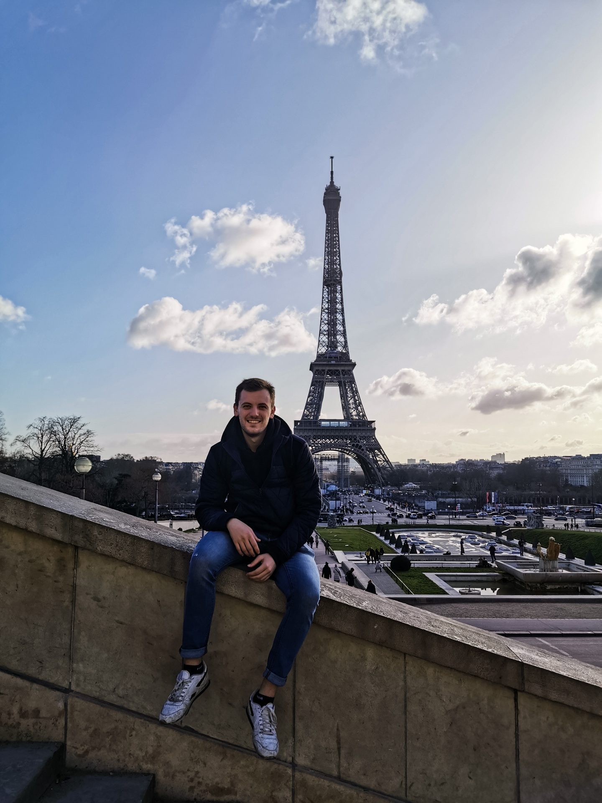

Bienvenue sur marine's recipes ! Nous sommes Marine & Luca, deux grands gourmands passionnés de cuisine. 👩🏼🍳👨🏻🍳

Marine 🌿
- Je m'appelle Marine.
- J'ai 21 printemps, et j'étudie dans une école d'ingénieur.
- Depuis mon plus jeune âge, j'adore cuisiner.
- J'ai créé ce site afin de partager les recettes que j'aime réaliser au quotidien.
Luca 🍃
- Salut!
- Moi c'est Luca, j'ai 24 ans et je suis aussi dans une école d'ingénieur.
- Depuis que j'ai rencontré Marine, mon alimentation a complètement changé, je mange "healthy" comme elle dit et j'adore ça !
